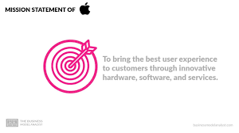

Apple Inc. was founded in 1976 by Steve Jobs, Steve Wozniak, and Ronald Wayne. The company started out in a small garage in Cupertino, California, and initially focused on producing personal computers. In 1984, Apple introduced the Macintosh computer, which was one of the first personal computers to feature a graphical user interface. Throughout the 1980s and 1990s, Apple faced stiff competition from companies like IBM and Microsoft, but it continued to innovate with products like the iMac, iPod, and iPhone. In 2011, Steve Jobs passed away, but Apple continued to grow under the leadership of Tim Cook. Today, Apple is one of the most valuable companies in the world and continues to innovate with new products and services.
Apple's mission statement is: "to bring the best user experience to its customers through innovative hardware, software, and services." This mission statement highlights the company's focus on creating products that not only perform well but also offer a seamless and enjoyable experience for its customers. Apple's core values include innovation, design, simplicity, focus on the customer, and a dedication to excellence. Innovation is a key value for Apple, and the company is always pushing the boundaries of what is possible with technology. Design is also important to Apple, and the company is known for its sleek and stylish products. Simplicity is another core value, and Apple strives to make its products easy to use and understand. The company is also highly focused on the customer, and it prioritizes customer satisfaction in everything it does. Finally, Apple is dedicated to excellence, and it holds itself to the highest standards in terms of quality, performance, and reliability.
Apple Inc. has had numerous key milestones and accomplishments throughout its history. Some of the most significant include the introduction of the Macintosh computer in 1984, which revolutionized personal computing with its graphical user interface. In 2001, Apple launched the iPod, which transformed the music industry and paved the way for the company's entry into the mobile phone market with the introduction of the iPhone in 2007. The App Store, launched in 2008, created a new ecosystem for software developers and gave rise to countless new businesses. In 2010, Apple introduced the iPad, which helped to redefine the tablet market. More recently, Apple has focused on developing its services business, which includes products like Apple Music, iCloud, and Apple Pay. Apple's continued success and growth have made it one of the most valuable companies in the world, with a market capitalization of over $2 trillion.